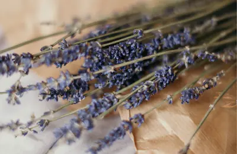

Ingrediente vegetale în cosmetice: ghid documentat despre proprietățile extractelor botanice
Ingredientele vegetale sunt componente obținute din diferite părți ale plantelor: frunze, flori, rădăcini, fructe, semințe și scoarță. În produsele cosmetice, acestea sunt utilizate sub formă de extracte, uleiuri, hidrolați și alți derivați vegetali. Compoziția lor poate include polifenoli, flavonoide, acizi organici, vitamine și alte substanțe naturale, care pot contribui la proprietățile hidratante, emoliente, calmante și antioxidante ale formulelor cosmetice.
Interesul pentru extractele botanice este legat de diversitatea compușilor bioactivi prezenți în plante. Aceștia sunt studiați pentru activitatea antioxidantă, interacțiunea cu bariera cutanată, capacitatea de a catifela pielea și de a contribui la confortul acesteia atunci când apare senzația de uscăciune sau de piele care ține. Totuși, proprietățile unui anumit extract depind de specia plantei, partea utilizată, metoda de extracție, concentrație și caracteristicile formulei cosmetice. Rezultatele studiilor de laborator nu reflectă întotdeauna efectele produsului finit asupra pielii.
Atunci când alegi produse cosmetice cu ingrediente vegetale, este important să ții cont nu doar de denumirea plantei de pe ambalaj, ci și de forma în care apare în compoziție, poziția sa în lista INCI, caracteristicile formulei și toleranța individuală. Originea naturală a unui ingredient nu garantează, prin ea însăși, eficacitatea sau absența reacțiilor alergice. Unele extracte vegetale și uleiuri esențiale pot provoca iritații sau reacții de sensibilizare, în special în cazul pielii reactive.
În acest ghid Estetica Lens, vom analiza ce ingrediente botanice sunt utilizate în cosmetice, cum se obțin extractele vegetale și ce rol pot avea în îngrijirea pielii. Vom prezenta proprietățile unor plante populare, particularitățile utilizării lor, modul de citire a listei INCI și criteriile de alegere a produselor cosmetice. Vom acorda o atenție deosebită motivului pentru care este important să evaluăm nu doar originea ingredientelor, ci și datele științifice privind produsul finit.
Descoperă serviciileGhid complet despre ingredientele vegetale din cosmetice
Ce sunt ingredientele botanice?
Ce ingrediente se obțin din plante, ce forme pot avea în produsele cosmetice și prin ce se deosebesc extractele, uleiurile și hidrolații.
Cum se obțin extractele vegetale?
Extracte apoase, glicerinice, alcoolice și uleioase: principalele metode de obținere și particularitățile fiecăreia.
Ce beneficii pot avea pentru piele?
Proprietățile hidratante, emoliente, calmante și antioxidante ale ingredientelor vegetale în formulele cosmetice.
Extracte vegetale populare
Ce plante sunt utilizate în cosmetice, ce compuși conțin și de ce sunt apreciate în îngrijirea pielii.
Cum recunoști plantele în lista INCI?
Cum identifici ingredientele vegetale în lista de ingrediente și la ce să fii atent atunci când citești compoziția unui produs cosmetic.
În ce produse cosmetice sunt folosite?
Seruri, creme, tonere și alte produse cosmetice cu extracte vegetale: particularitățile diferitelor tipuri de formule.
Cum alegi extractele potrivite pentru pielea ta?
Particularitățile îngrijirii pielii uscate, grase și sensibile, toleranța individuală și posibilele reacții.
Întrebări frecvente
Cât de eficiente sunt extractele vegetale, dacă ingredientele naturale sunt întotdeauna sigure și cum alegi corect astfel de produse cosmetice.
Ce sunt ingredientele botanice și de ce sunt folosite în cosmetice?
Ingredientele botanice sunt componente obținute din plante și utilizate în formulele cosmetice. Acestea pot proveni din frunze, flori, rădăcini, fructe, semințe sau scoarță. Astfel de ingrediente se regăsesc în creme, seruri, tonere și alte produse destinate îngrijirii pielii.
Pe scurt, ingredientele botanice sunt componente de origine vegetală care sunt adăugate în cosmetice sub diferite forme: extracte, uleiuri, hidrolați și pulberi. În funcție de plantă și de metoda de prelucrare, acestea pot conține diverși compuși naturali, precum polifenoli, flavonoide, acizi organici și alte substanțe.
Interesul pentru ingredientele vegetale este legat de diversitatea proprietăților lor. Unele extracte pot contribui la hidratarea și catifelarea pielii, în timp ce altele sunt utilizate în formule destinate îngrijirii calmante sau protecției antioxidante. Totuși, efectul unui anumit ingredient depinde de compoziția sa, concentrație, metoda de obținere și asocierea cu celelalte componente ale produsului cosmetic.
Este important de reținut că originea vegetală nu înseamnă că un ingredient este potrivit pentru toată lumea sau că garantează un anumit rezultat. Unele extracte și uleiuri esențiale pot provoca iritații sau reacții alergice. De aceea, atunci când alegi produse cosmetice, este bine să verifici lista INCI, să ții cont de particularitățile pielii tale și de toleranța individuală la produs.

Cum se obțin extractele vegetale?
Pentru a obține un extract vegetal, substanțele solubile sunt extrase dintr-o anumită parte a plantei cu ajutorul unui solvent adecvat. În acest scop pot fi folosite frunze, flori, rădăcini, fructe, semințe sau alte părți ale plantei. Alegerea materiei prime și a metodei de prelucrare influențează compoziția și proprietățile extractului obținut.
1. Extracte apoase. Pentru obținerea lor se folosește apa, care ajută la extragerea compușilor hidrosolubili din materia vegetală. Aceste extracte pot conține, de exemplu, anumite tipuri de polifenoli, zaharuri și alte substanțe solubile în apă. Sunt utilizate frecvent în formule cosmetice pe bază de apă.
2. Extracte glicerinice. Ca solvent se utilizează glicerina sau un amestec de glicerină și apă. Această metodă permite obținerea unor extracte cu un anumit profil de compuși vegetali solubili. Glicerina este, de asemenea, cunoscută ca ingredient cu rol umectant în produsele cosmetice, însă proprietățile extractului finit depind de compoziția și concentrația acestuia.
3. Extracte alcoolice. Pentru extragerea substanțelor se utilizează alcool sau amestecuri hidroalcoolice. Acestea pot dizolva compuși care se extrag mai greu doar cu apă. După obținerea extractului, compoziția și conținutul de solvent sunt ajustate în funcție de tehnologia de producție și de destinația ingredientului cosmetic.
4. Extracte uleioase. Materia vegetală este lăsată la macerat într-un ulei potrivit pentru a extrage anumiți compuși liposolubili. Aceste extracte sunt utilizate în special în formule uleioase, balsamuri și creme. Proprietățile lor depind atât de plantă, cât și de uleiul de bază folosit.
Ce înseamnă acest lucru în practică? Aceeași specie de plantă poate da naștere unor extracte diferite, în funcție de partea utilizată, solvent și tehnologia de obținere. Prin urmare, simpla menționare a plantei în lista de ingrediente nu dezvăluie toate proprietățile ingredientului. Atunci când evaluezi un produs cosmetic, este important să iei în considerare forma extractului, poziția sa în lista INCI și caracteristicile formulei finale.

Ce beneficii pot avea ingredientele vegetale pentru piele?
Ingredientele vegetale sunt utilizate în cosmetice datorită diversității compușilor naturali pe care îi conțin. În funcție de specia plantei, metoda de obținere și compoziția extractului, acestea pot contribui la hidratarea și catifelarea pielii, la menținerea confortului cutanat și la completarea rutinei zilnice de îngrijire. Totuși, proprietățile diferitelor ingrediente vegetale pot varia considerabil.
1. Hidratarea și susținerea barierei cutanate. Unele ingrediente vegetale conțin substanțe care ajută la menținerea umidității sau la catifelarea suprafeței pielii. În formulele cosmetice, acestea sunt adesea asociate cu umectanți și emolienți, pentru a reduce senzația de uscăciune și de piele care ține. Efectul depinde de întreaga formulă, nu doar de un singur extract.
2. Catifelarea pielii și îmbunătățirea confortului cutanat. Uleiurile vegetale și anumite extracte pot conferi pielii o senzație mai fină și mai catifelată. Uleiurile contribuie la reducerea pierderii de apă, formând un strat emolient la suprafața pielii. Proprietățile lor depind de compoziția acizilor grași și de modul în care sunt utilizate în produsele cosmetice.
3. Îngrijire cu efect calmant. Unele extracte vegetale, precum cele obținute din mușețel sau gălbenele, sunt utilizate în formule destinate pielii sensibile sau predispuse la disconfort. Anumiți compuși din aceste plante sunt studiați pentru potențialele lor proprietăți calmante. Totuși, toleranța depinde de compoziție, concentrație și reacția individuală a pielii.
4. Protecție antioxidantă. Numeroase plante conțin polifenoli și alți compuși care prezintă activitate antioxidantă în condiții de laborator. Aceștia sunt studiați în contextul protejării formulelor cosmetice și al pielii împotriva efectelor radicalilor liberi. Totuși, activitatea unui ingredient demonstrată în laborator nu înseamnă automat că produsul finit va avea un efect vizibil asupra pielii.
5. Completarea îngrijirii pielii cu semne ale îmbătrânirii. Unele ingrediente vegetale sunt studiate datorită conținutului de compuși antioxidanți și de alte substanțe biologic active. Acestea pot fi incluse în formule destinate menținerii unui aspect îngrijit al pielii și îmbunătățirii confortului cutanat. Totuși, extractele vegetale nu reprezintă o soluție universală împotriva ridurilor, iar rezultatele depind de ingredientul utilizat și de formula cosmetică în ansamblu.
Ce este important de reținut? Proprietățile prezentate nu sunt valabile în aceeași măsură pentru toate ingredientele vegetale și nu garantează un anumit rezultat. Eficiența depinde de specia plantei, partea utilizată, metoda de extracție, concentrație și asocierea cu alte componente. Atunci când alegi produse cosmetice, este important să iei în considerare datele disponibile despre produsul finit și toleranța individuală. Originea naturală nu garantează, prin ea însăși, siguranța sau eficiența.
Extracte vegetale populare în cosmetice
Extractele vegetale sunt obținute din diferite părți ale plantelor și sunt utilizate în cosmetice datorită diversității compușilor naturali pe care îi conțin. În continuare, vom prezenta câteva plante populare care se regăsesc în produsele pentru îngrijirea pielii.
Cătină
Fructele și uleiul de cătină sunt utilizate în formulele cosmetice pentru îngrijirea hrănitoare și emolientă a pielii. Cătina conține diverși compuși vegetali, iar proprietățile ingredientului obținut depind de metoda de prelucrare.

Lavandă
Extractele și alți derivați ai lavandei sunt utilizați în cosmetice pentru îngrijirea pielii. Planta este folosită și în compozițiile aromatice. Uleiul esențial de lavandă poate să nu fie potrivit pentru pielea sensibilă.

Gălbenele
Extractul din flori de gălbenele este inclus frecvent în produsele cosmetice destinate îngrijirii blânde și calmante a pielii. Proprietățile sale depind de compoziția extractului și de caracteristicile formulei finale.

Mușețel
Mușețelul este utilizat în cosmetice sub formă de extracte și alți derivați. Unii dintre compușii săi sunt studiați pentru potențialele proprietăți calmante și sunt utilizați în formulele destinate îngrijirii pielii.
Coada-șoricelului
Extractul de coada-șoricelului se regăsește în formule cosmetice destinate îngrijirii pielii. Planta conține diverși compuși naturali, iar proprietățile sale depind de materia primă utilizată și de metoda de extracție.

Pătlagină
Frunzele de pătlagină sunt utilizate pentru obținerea extractelor vegetale, care pot fi incluse în produsele cosmetice destinate îngrijirii pielii. Proprietățile specifice ale ingredientului sunt determinate de compoziția și concentrația acestuia.

Cum recunoști extractele vegetale în lista INCI?
INCI (International Nomenclature of Cosmetic Ingredients) este sistemul internațional de denumire a ingredientelor cosmetice. Pe ambalajul produselor, componentele sunt menționate folosind denumiri standardizate, care ajută la identificarea substanțelor din formulă. Ingredientele vegetale sunt indicate, de obicei, prin denumirile latine ale plantelor, însoțite de precizarea părții utilizate sau a formei ingredientului.
1. Caută denumirile latine ale plantelor. Denumirile multor extracte vegetale includ numele latin al plantei și cuvântul Extract. De exemplu, Chamomilla Recutita (Matricaria) Flower Extract desemnează extractul din flori de mușețel, iar Calendula Officinalis Flower Extract — extractul din flori de gălbenele.
2. Acordă atenție părții plantei utilizate. În lista INCI poate fi precizată partea plantei din care provine ingredientul: Flower — floare, Leaf — frunză, Root — rădăcină, Fruit — fruct, Seed — sămânță. De exemplu, Plantago Major Leaf Extract desemnează extractul din frunzele pătlaginei mari.
3. Diferențiază extractele de uleiuri. Cuvântul Extract indică, de regulă, un extract, iar Oil — un ulei. De exemplu, Hippophae Rhamnoides Fruit Extract desemnează extractul din fructele de cătină, iar Hippophae Rhamnoides Fruit Oil — uleiul din fructele de cătină. Acestea sunt forme diferite ale ingredientului, care pot avea compoziții și proprietăți distincte.
4. Ține cont de poziția ingredientului în listă. Ingredientele cosmetice sunt enumerate, de regulă, în ordinea descrescătoare a concentrației, atunci când aceasta depășește 1%. Ingredientele prezente în concentrații de 1% sau mai mici pot fi enumerate în orice ordine după cele cu o concentrație mai mare de 1%. Prin urmare, poziția unui extract vegetal în listă nu permite întotdeauna stabilirea cantității exacte din formulă.
5. Nu te orienta doar după denumirea plantei. Același ingredient vegetal poate fi prezent în forme și concentrații diferite. În plus, proprietățile produsului finit depind de întreaga formulă, de tehnologia de fabricație, de combinația ingredientelor și de particularitățile pielii. Simplul fapt că un extract este menționat pe ambalaj nu garantează un efect cosmetic semnificativ.
Ce este important să știi? Lista INCI te ajută să identifici ingredientele utilizate într-un produs cosmetic, dar nu oferă informații complete despre metoda de obținere, concentrația exactă a fiecărei componente sau eficiența produsului. Atunci când alegi un produs, analizează întreaga listă de ingrediente, scopul formulei și toleranța individuală. Originea naturală a unui ingredient nu garantează, prin ea însăși, absența iritațiilor sau a reacțiilor alergice.

În ce produse cosmetice se folosesc extractele vegetale?
Extractele vegetale se regăsesc în numeroase categorii de produse cosmetice: de la produse de curățare până la seruri și creme. Acestea sunt adăugate în formule cu diferite scopuri — hidratare, catifelare, îngrijire calmantă și menținerea unui aspect îngrijit al pielii. Proprietățile concrete depind de planta aleasă, de forma ingredientului și de compoziția produsului.
1. Seruri și concentrate. Serurile includ adesea extracte vegetale în combinație cu ingrediente hidratante și alte componente funcționale. Aceste produse pot fi formulate pentru menținerea hidratării, catifelarea pielii sau completarea îngrijirii cu efect antioxidant. La alegere, este important să iei în considerare nu doar prezența extractului, ci întreaga formulă.
2. Creme și emulsii. Extractele și uleiurile vegetale sunt utilizate în cremele de zi și de noapte, precum și în emulsii cu textură lejeră. Acestea pot completa acțiunea ingredientelor hidratante și emoliente, contribuind la menținerea confortului pielii și la reducerea senzației de uscăciune.
3. Tonere și esențe. Produsele de îngrijire pe bază de apă conțin adesea extracte vegetale apoase sau glicerinice. Acestea sunt utilizate ca ingrediente complementare în formulele hidratante și calmante. Totuși, tonerul sau esența nu înlocuiește crema și celelalte etape ale rutinei de îngrijire atunci când pielea are nevoie de emoliere suplimentară.
4. Măști pentru față. Ingredientele vegetale se regăsesc în măștile tip șervețel, în cele cremoase și în măștile care se clătesc. În funcție de compoziție, acestea pot completa îngrijirea hidratantă, emolientă sau calmantă. Rezultatul depinde în mare măsură de timpul de aplicare și de celelalte ingrediente din formulă.
5. Produse de curățare. Extractele vegetale pot face parte din compoziția gelurilor, spumelor și laptelui demachiant sau de curățare. În aceste produse, ele completează formula de bază, al cărei rol este să îndepărteze impuritățile, excesul de sebum și resturile de machiaj. Deoarece produsul se clătește, acțiunea sa diferă de cea a produselor care rămân pe piele.
6. Balsamuri și uleiuri pentru față. Aceste produse pot conține uleiuri vegetale și extracte liposolubile. Ele contribuie la catifelarea pielii și la reducerea pierderii de umiditate, oferind totodată formulei o textură nutritivă. Varianta potrivită depinde de particularitățile și nevoile pielii.
Ce este important să știi? Prezența unui extract vegetal într-un produs cosmetic nu determină, prin ea însăși, eficiența acestuia. Contează concentrația, metoda de obținere a ingredientului, combinația cu alte componente și tipul produsului — dacă se clătește sau rămâne pe piele. Alege produsele cosmetice ținând cont de nevoile pielii, de întreaga listă INCI și de toleranța individuală.

Cum alegi extractele vegetale potrivite pentru pielea ta?
Atunci când alegi produse cosmetice cu ingrediente botanice, este important să ții cont de particularitățile pielii și de scopul produsului. Cătina, lavanda, gălbenelele, mușețelul, coada-șoricelului și pătlagina au compoziții și proprietăți diferite, astfel încât fiecare dintre aceste ingrediente vegetale poate completa în mod diferit o formulă cosmetică. Să vedem la care dintre ele merită să acorzi atenție, în funcție de nevoile pielii.
1. Pentru pielea uscată — cătină. Derivații de cătină, în special uleiul vegetal, sunt utilizați în produsele cosmetice emoliente și hrănitoare. Forma uleioasă ajută la reducerea pierderii de umiditate și la menținerea confortului pielii. Atunci când alegi un produs, urmărește combinația dintre cătină și alte ingrediente hidratante și emoliente.
2. Pentru pielea care are nevoie de îngrijire blândă — gălbenele. Extractul din flori de gălbenele este inclus frecvent în formulele cosmetice destinate îngrijirii pielii predispuse la uscăciune și disconfort. Este utilizat datorită compușilor naturali din plantă, studiați în contextul potențialelor proprietăți calmante. Totuși, toleranța individuală depinde întotdeauna de compoziția concretă a produsului.
3. Pentru pielea sensibilă — mușețel. Extractul de mușețel se regăsește în produsele destinate îngrijirii delicate a pielii. Unii dintre compușii săi sunt studiați pentru potențialele proprietăți calmante. Cu toate acestea, chiar și mușețelul poate provoca reacții individuale, de aceea persoanele cu piele sensibilă ar trebui să aleagă formule fără cantități mari de parfumuri și uleiuri esențiale.
4. Pentru îngrijire suplimentară — coada-șoricelului. Extractul de coada-șoricelului este utilizat în formulele cosmetice ca ingredient vegetal cu o compoziție diversă de compuși naturali. Poate completa produsele destinate îngrijirii zilnice, însă prezența sa nu garantează un anumit efect. Evaluează întreaga formulă și particularitățile pielii tale.
5. Pentru îngrijirea blândă de zi cu zi — pătlagină. Extractul din frunze de pătlagină se regăsește în produsele cosmetice destinate îngrijirii pielii. Compușii săi vegetali prezintă interes din perspectiva proprietăților cosmetice, însă rezultatul depinde de metoda de obținere a extractului, de concentrație și de combinația cu celelalte ingrediente.
6. Lavandă — ținând cont de sensibilitatea pielii. Derivații de lavandă sunt utilizați în cosmetice ca ingrediente vegetale și aromatice. Totuși, este deosebit de important să faci diferența între extractul de plantă și uleiul esențial de lavandă. Acesta din urmă conține substanțe aromatice care, la unele persoane, pot provoca iritații sau sensibilizare. Dacă ai pielea sensibilă, este recomandat să verifici cu atenție lista ingredientelor și să alegi produse pe care pielea le tolerează bine.
Ce este important să știi? Nu există un singur extract vegetal care să fie ideal pentru un anumit tip de piele. Cătina poate completa îngrijirea emolientă, gălbenelele și mușețelul sunt utilizate frecvent în formulele calmante, iar coada-șoricelului, pătlagina și lavanda pot avea rolul unor ingrediente vegetale complementare. Alege produsul ținând cont de întreaga listă INCI, de concentrația ingredientelor și de toleranța individuală. Originea naturală nu exclude riscul de iritații sau alergii.
Întrebări frecvente despre ingredientele vegetale
Ce sunt ingredientele botanice din cosmetice?
Ingredientele botanice sunt componente obținute din plante și utilizate în formulele cosmetice. Acestea includ extracte, uleiuri și alți derivați vegetali, care pot fi obținuți din frunze, flori, rădăcini, fructe și semințe. Sunt adăugate în produse pentru îngrijire cu efect hidratant, emolient, calmant și antioxidant.
Ce extracte vegetale sunt utilizate în cosmetice?
Printre ingredientele vegetale frecvent utilizate se numără cătina, lavanda, gălbenelele, mușețelul, coada-șoricelului și pătlagina. Acestea diferă prin compoziție și proprietăți: de exemplu, derivații de cătină sunt utilizați în formule emoliente, iar extractele de mușețel și gălbenele se regăsesc adesea în produsele destinate îngrijirii blânde a pielii.
Ajută extractele vegetale la hidratarea pielii?
Unele ingrediente vegetale pot completa rutina de hidratare. De exemplu, uleiurile vegetale contribuie la catifelarea pielii și la reducerea pierderii de umiditate. Totuși, nu toate extractele au aceleași proprietăți. Pentru o hidratare adecvată contează întreaga formulă, inclusiv ingrediente precum glicerina și alți agenți umectanți.
Sunt extractele vegetale potrivite pentru pielea sensibilă?
Unele extracte de mușețel și gălbenele sunt utilizate în cosmetice pentru îngrijirea delicată a pielii. Totuși, originea vegetală nu garantează o bună toleranță. Chiar și ingredientele naturale pot provoca iritații sau reacții alergice. Dacă ai pielea sensibilă, este recomandat să alegi formule simple, fără cantități mari de parfumuri și uleiuri esențiale.
Poate cătina să ajute pielea uscată?
Uleiul de cătină este utilizat în cosmetice datorită proprietăților sale emoliente. Poate fi inclus în creme nutritive, balsamuri și alte produse destinate îngrijirii pielii uscate. Rezultatul depinde însă de concentrația uleiului, de celelalte ingrediente din formulă și de toleranța individuală.
Prin ce se diferențiază extractul de lavandă de uleiul esențial?
Extractul de lavandă și uleiul esențial sunt forme diferite ale ingredientului vegetal. Acestea diferă prin metoda de obținere și prin compoziție. Extractul conține compuși extrași cu ajutorul unui anumit solvent, în timp ce uleiul esențial este un amestec concentrat de substanțe aromatice volatile. Uleiul esențial poate provoca iritații sau sensibilizare, de aceea prezența sa în cosmetice trebuie luată în considerare mai ales în cazul pielii sensibile.
Cum identifici extractele vegetale în lista INCI?
Multe extracte vegetale sunt indicate prin denumirea latină a plantei, urmată de cuvântul Extract. De exemplu, Chamomilla Recutita (Matricaria) Flower Extract reprezintă extractul din flori de mușețel, Calendula Officinalis Flower Extract — extractul din flori de gălbenele, iar Plantago Major Leaf Extract — extractul din frunze de pătlagină. Pentru identificarea exactă a ingredientelor, este important să citești cu atenție întreaga listă INCI.
Sunt întotdeauna sigure ingredientele vegetale naturale?
Nu. Originea naturală nu exclude riscul de iritații, alergii sau intoleranță individuală. Este recomandată o atenție deosebită în cazul uleiurilor esențiale și al ingredientelor aromatice. Înainte de prima utilizare a unui produs nou, poți face un test pe o zonă mică de piele, respectând instrucțiunile producătorului.
Pot fi combinate mai multe extracte vegetale?
Da, într-o singură formulă cosmetică pot fi combinate mai multe ingrediente vegetale. De exemplu, extractele de mușețel și gălbenele pot face parte din același produs. Totuși, compatibilitatea ingredientelor și toleranța produsului finit depind de întreaga formulă, de concentrații și de particularitățile pielii.
Cum alegi produsele cosmetice cu extracte vegetale?
Ține cont de nevoile pielii, de scopul produsului și de întreaga listă INCI. Acordă atenție formei ingredientului vegetal, prezenței unor potențiali iritanți și informațiilor despre produs. Nu este recomandat să alegi un produs cosmetic doar pe baza denumirii unei plante populare: contează calitatea întregii formule și toleranța individuală.
Împărtășește experiența ta
Părerea ta îi ajută pe alții să înțeleagă dacă acest ingredient li se potrivește. Chiar și 1–2 fraze sunt utile
Nu știți ce să scrieți? Selectați opțiunile — textul se va genera automat
Publicăm doar recenzii reale. Reclama și linkurile nu trec de moderare
Prin trimiterea comentariului, sunteți de acord cu Politica de confidențialitate.